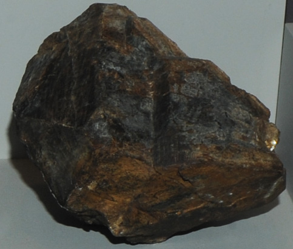

|

| (Ca,Na)2Ta2O6(O,OH,F)
This sample of microlite is displayed in the Smithsonian Museum of Natural History. Microlite is a oxide mineral which contains tantalum and fluorine with the composition (Ca,Na)2Ta2O6(O,OH,F). The sample at left is about 14 cm across and is from Amelia, Virginia.
|